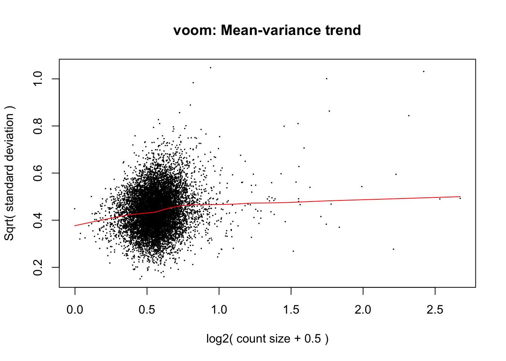
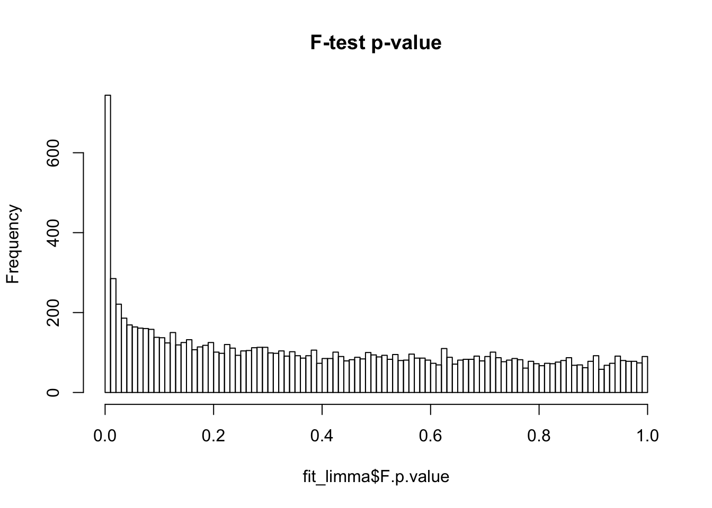
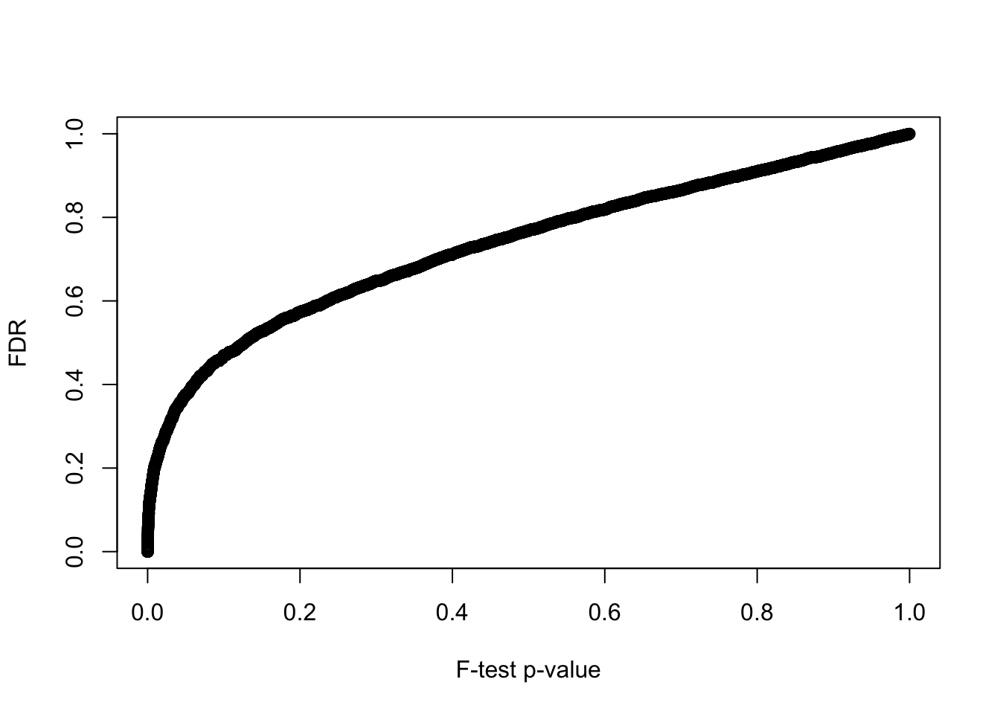
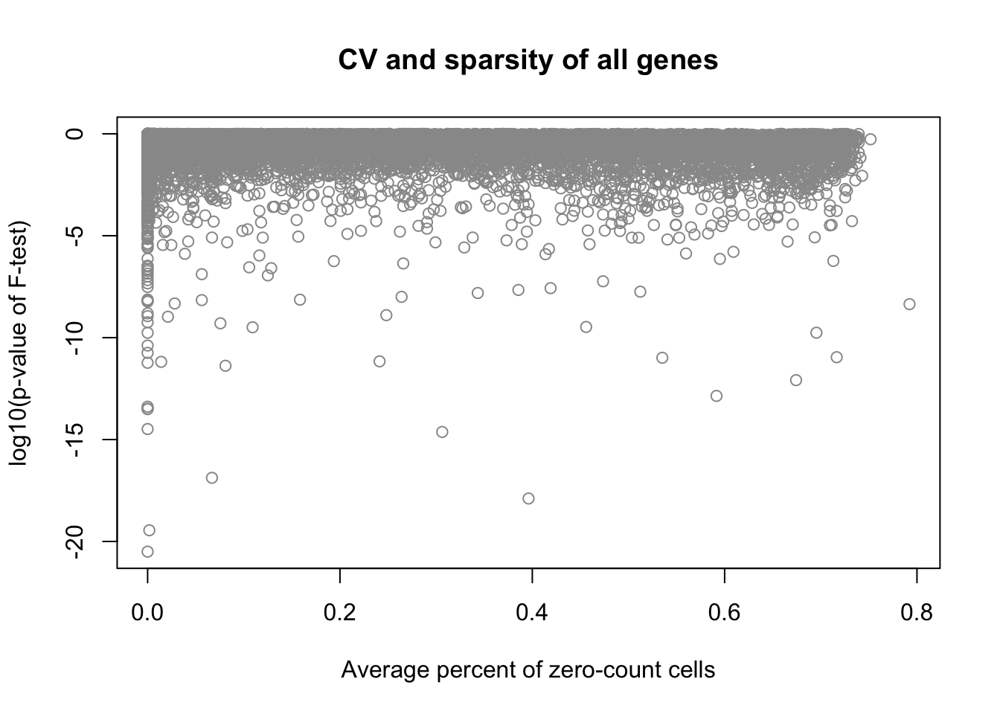
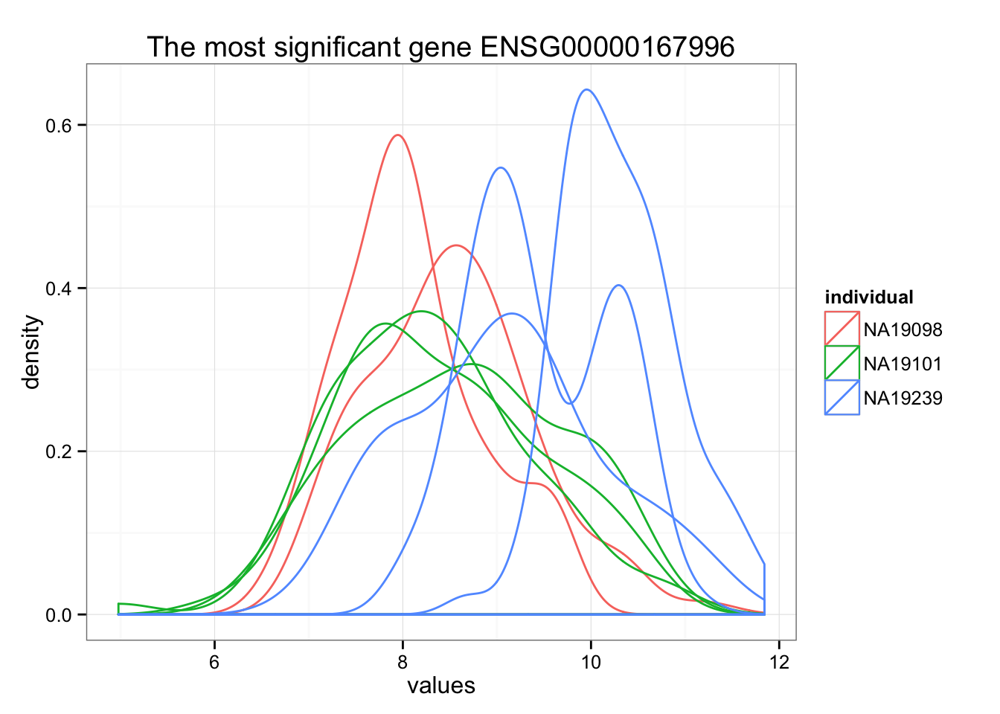
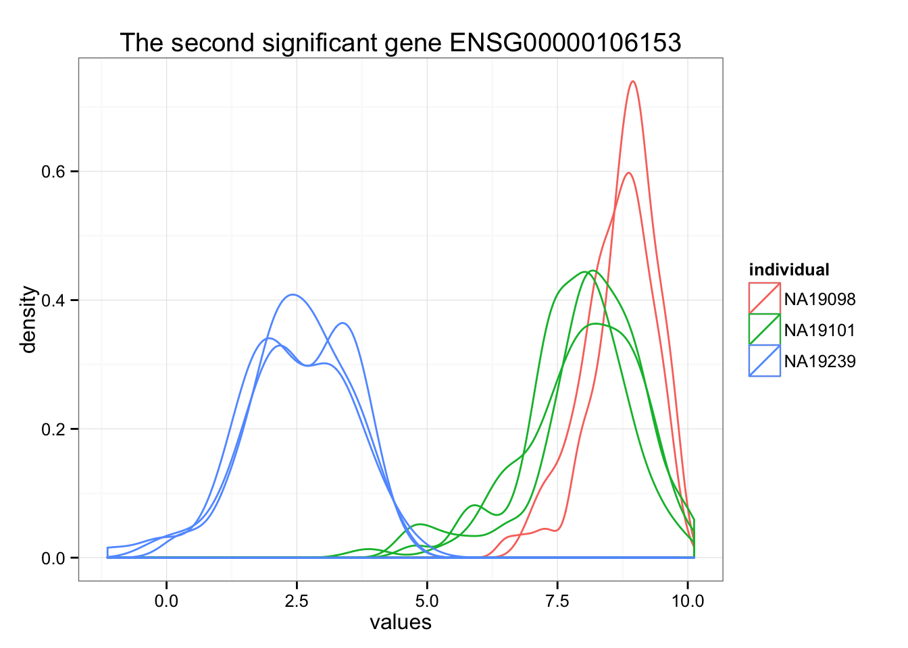
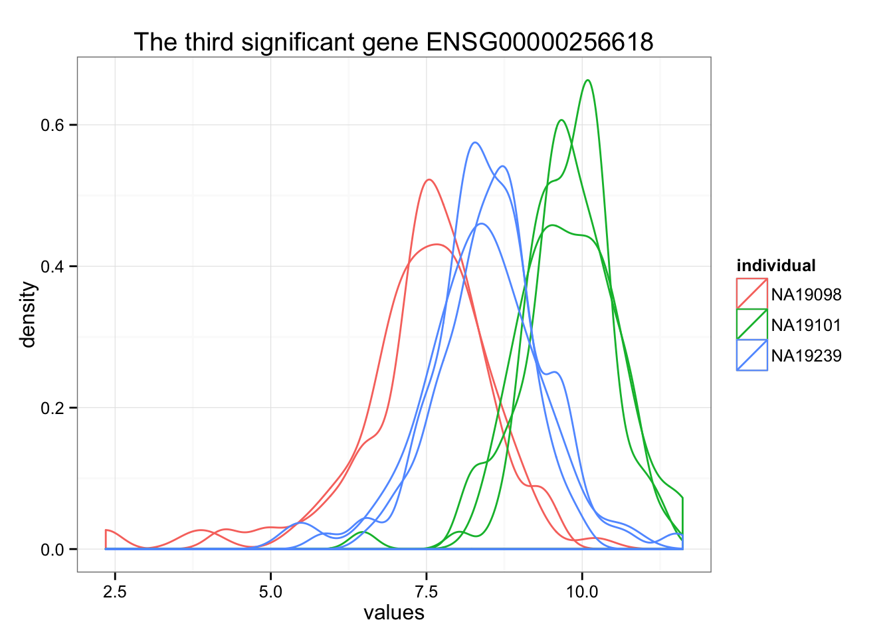

Compare Coefficient of variation between individuals
Joyce Hsiao
2015-10-16
Last updated: 2015-10-21
Code version: 78afeddbcf288d337c42915e95f0d9a578030a08
Objective
Previously, we used the entire set of data including all individuals and all batches to perform normalization of coefficient of variations (link1) and performed
In this document, we wil perform per gene differential analysis of coefficients of variations using only coefficients of variation from ENSG genes and also from QC-approved batches (no NA19098.r2).
Set up
library("data.table")
library("dplyr")
library("limma")
library("edgeR")
library("ggplot2")
library("grid")
library("zoo")
theme_set(theme_bw(base_size = 12))
source("functions.R")Prepare data
Input annotation of only QC-filtered single cells
anno_qc <- read.table("../data/annotation-filter.txt", header = TRUE,
stringsAsFactors = FALSE)
head(anno_qc) individual replicate well batch sample_id
1 NA19098 r1 A01 NA19098.r1 NA19098.r1.A01
2 NA19098 r1 A02 NA19098.r1 NA19098.r1.A02
3 NA19098 r1 A04 NA19098.r1 NA19098.r1.A04
4 NA19098 r1 A05 NA19098.r1 NA19098.r1.A05
5 NA19098 r1 A06 NA19098.r1 NA19098.r1.A06
6 NA19098 r1 A07 NA19098.r1 NA19098.r1.A07Remove NA19098.r2
is_include <- anno_qc$batch != "NA19098.r2"
anno_qc_filter <- anno_qc[which(is_include), ]Import endogeneous gene molecule counts that are QC-filtered, CPM-normalized, ERCC-normalized, and also processed to remove unwanted variation from batch effet. ERCC genes are removed from this file.
molecules_ENSG <- read.table("../data/molecules-final.txt", header = TRUE, stringsAsFactors = FALSE)
molecules_ENSG <- molecules_ENSG[ , is_include]Input moleclule counts before log2 CPM transformation. This file is used to compute percent zero-count cells per sample.
molecules_sparse <- read.table("../data/molecules-filter.txt", header = TRUE, stringsAsFactors = FALSE)
molecules_sparse <- molecules_sparse[grep("ENSG", rownames(molecules_sparse)), ]
stopifnot( all.equal(rownames(molecules_ENSG), rownames(molecules_sparse)) )Normalize coefficient of variation
Compute coefficient of variation.
# Compute CV and mean of normalized molecule counts (take 2^(log2-normalized count))
molecules_cv_batch_ENSG <-
lapply(1:length(unique(anno_qc_filter$batch)), function(per_batch) {
molecules_per_batch <- 2^molecules_ENSG[ , unique(anno_qc_filter$batch) == unique(anno_qc_filter$batch)[per_batch] ]
mean_per_gene <- apply(molecules_per_batch, 1, mean, na.rm = TRUE)
sd_per_gene <- apply(molecules_per_batch, 1, sd, na.rm = TRUE)
cv_per_gene <- data.frame(mean = mean_per_gene,
sd = sd_per_gene,
cv = sd_per_gene/mean_per_gene)
rownames(cv_per_gene) <- rownames(molecules_ENSG)
# cv_per_gene <- cv_per_gene[rowSums(is.na(cv_per_gene)) == 0, ]
cv_per_gene$batch <- unique(anno_qc_filter$batch)[per_batch]
# Add sparsity percent
molecules_sparse_per_batch <- molecules_sparse[ , unique(anno_qc_filter$batch) == unique(anno_qc_filter$batch)[per_batch]]
cv_per_gene$sparse <- rowMeans(as.matrix(molecules_sparse_per_batch) == 0)
return(cv_per_gene)
})
names(molecules_cv_batch_ENSG) <- unique(anno_qc_filter$batch)
sapply(molecules_cv_batch_ENSG, dim) NA19098.r1 NA19098.r3 NA19101.r1 NA19101.r2 NA19101.r3 NA19239.r1
[1,] 10483 10483 10483 10483 10483 10483
[2,] 5 5 5 5 5 5
NA19239.r2 NA19239.r3
[1,] 10483 10483
[2,] 5 5Merge summary data.frames.
df_ENSG <- do.call(rbind, molecules_cv_batch_ENSG)Compute rolling medians across all samples.
# Compute a data-wide coefficient of variation on CPM normalized counts.
data_cv_ENSG <- apply(2^molecules_ENSG, 1, sd)/apply(2^molecules_ENSG, 1, mean)
# Order of genes by mean expression levels
order_gene <- order(apply(2^molecules_ENSG, 1, mean))
# Rolling medians of log10 squared CV by mean expression levels
roll_medians <- rollapply(log10(data_cv_ENSG^2)[order_gene], width = 50, by = 25,
FUN = median, fill = list("extend", "extend", "NA") )
ii_na <- which( is.na(roll_medians) )
roll_medians[ii_na] <- median( log10(data_cv_ENSG^2)[order_gene][ii_na] )
names(roll_medians) <- rownames(molecules_ENSG)[order_gene]
# re-order rolling medians
reorder_gene <- match(rownames(molecules_ENSG), names(roll_medians) )
roll_medians <- roll_medians[ reorder_gene ]
stopifnot( all.equal(names(roll_medians), rownames(molecules_ENSG) ) )Compute adjusted coefficient of variation.
# adjusted coefficient of variation on log10 scale
log10cv2_adj_ENSG <-
lapply(1:length(molecules_cv_batch_ENSG), function(per_batch) {
foo <- log10(molecules_cv_batch_ENSG[[per_batch]]$cv^2) - roll_medians
return(foo)
})
df_ENSG$log10cv2_adj_ENSG <- do.call(c, log10cv2_adj_ENSG)limma
We use the lmFit function in the limma package to fit linear models comparing coefficients of variations between individuals for all genes. lmFit provides a fast algorithm for least-square estimation, when design matrix is the same for all genes.
library(limma)
df_limma <- matrix(df_ENSG$log10cv2_adj_ENSG,
nrow = nrow(molecules_ENSG), ncol = 8, byrow = FALSE)
design <- data.frame(individual = factor(rep(unique(anno_qc_filter$individual), each = 3) ),
rep = factor(rep(c(1:3), times = 3)) )
design <- design[ with(design, !(individual == "NA19098" & rep == "2")), ]
colnames(df_limma) <- with(design, paste0(individual, rep))
fit_limma <- lmFit(df_limma, design = model.matrix( ~ individual, data = design))
fit_limma <- eBayes(fit_limma)Voom plot of all genes
voom(10^df_limma, design = model.matrix(~individual, data = design),
plot = TRUE)
An object of class "EList"
$E
NA190981 NA190983 NA191011 NA191012 NA191013 NA192391 NA192392
[1,] 7.447012 7.031477 7.352022 7.153768 6.697810 6.765175 7.228127
[2,] 6.971529 7.160818 6.977116 6.948045 6.894755 7.028895 7.399041
[3,] 6.939709 7.221381 6.977384 7.366984 6.860778 6.890788 7.432298
[4,] 6.932359 6.612648 6.928708 7.015100 6.864649 6.826366 6.874850
[5,] 6.519492 6.959080 6.817123 7.108733 7.157908 7.024883 6.953339
NA192393
[1,] 6.768181
[2,] 7.268464
[3,] 7.051867
[4,] 6.810583
[5,] 6.901143
10478 more rows ...
$weights
[,1] [,2] [,3] [,4] [,5] [,6] [,7]
[1,] 18.79855 25.37890 28.50313 29.85773 28.10247 28.50479 30.57227
[2,] 25.10829 28.15089 30.80602 32.80537 29.67583 21.00660 25.97972
[3,] 24.53037 28.11185 28.49671 29.84635 28.10114 25.44200 28.17701
[4,] 29.77871 34.06485 30.89162 32.90109 29.75974 29.80683 32.48603
[5,] 30.52272 35.03130 29.02607 30.75501 28.37203 28.13184 29.69292
[,8]
[1,] 28.07405
[2,] 17.85707
[3,] 20.85048
[4,] 28.19414
[5,] 27.73230
10478 more rows ...
$design
(Intercept) individualNA19101 individualNA19239
1 1 0 0
3 1 0 0
4 1 1 0
5 1 1 0
6 1 1 0
7 1 0 1
8 1 0 1
9 1 0 1
attr(,"assign")
[1] 0 1 1
attr(,"contrasts")
attr(,"contrasts")$individual
[1] "contr.treatment"
$targets
lib.size
NA190981 11437.157
NA190983 10101.899
NA191011 9865.269
NA191012 9296.464
NA191013 10216.681
NA192391 10925.381
NA192392 10071.855
NA192393 11803.613limma unmoderated F-test p-value
hist(fit_limma$F.p.value, breaks = 100, main = "F-test p-value")
False discover control adjutment.
F.p.adj <- p.adjust(fit_limma$F.p.value, method = "fdr")
summary(F.p.adj) Min. 1st Qu. Median Mean 3rd Qu. Max.
0.0000 0.4957 0.6683 0.6452 0.8331 0.9999 hist(F.p.adj, main = "False discovery rate", xlab = "FDR")
Cutoffs
df_cuts <- data.frame(cuts = c(.001, .01, .05, .1, .15, .2))
df_cuts$sig_count <- sapply(1:6, function(per_cut) {
sum(F.p.adj < df_cuts$cuts[per_cut] )
})
df_cuts cuts sig_count
1 0.001 18
2 0.010 42
3 0.050 103
4 0.100 177
5 0.150 328
6 0.200 464P-value before versus after false discovery adjustment.
plot(y = F.p.adj, x = fit_limma$F.p.value,
xlab = "F-test p-value", ylab = "FDR")
P-value and sparsity
df_sparse <- rowMeans(matrix(df_ENSG$sparse, nrow = nrow(molecules_ENSG), ncol = 8,
byrow = FALSE) )
plot(x = df_sparse, y = log10(fit_limma$F.p.value),
xlab = "Average percent of zero-count cells",
ylab = "log10(p-value of F-test)",
main = "CV and sparsity of all genes", col = "grey60")
Correlation between mean sparsity rate and p-value.
cor(df_sparse, fit_limma$F.p.value, method = "spearman")[1] -0.1358685CPM density distributions of significant genes
Rank genes by FDR.
order_limma <- order(F.p.adj)
ggplot(data.frame(values = unlist(molecules_ENSG[order_limma[1],] ),
individual = factor(anno_qc_filter$individual),
replicate = factor(anno_qc_filter$replicate),
batch = factor(anno_qc_filter$batch), check.rows = F)
, aes(x = values)) +
geom_density(aes(group = batch, col = individual)) +
ggtitle(paste("The most significant gene", rownames(molecules_ENSG)[order_limma[1]]) )
ggplot(data.frame(values = unlist(molecules_ENSG[order_limma[2],] ),
individual = factor(anno_qc_filter$individual),
replicate = factor(anno_qc_filter$replicate),
batch = factor(anno_qc_filter$batch), check.rows = F), aes(x = values)) +
geom_density(aes(group = batch, col = individual)) +
ggtitle(paste("The second significant gene", rownames(molecules_ENSG)[order_limma[2]]) )
ggplot(data.frame(values = unlist(molecules_ENSG[order_limma[3],] ),
individual = factor(anno_qc_filter$individual),
replicate = factor(anno_qc_filter$replicate),
batch = factor(anno_qc_filter$batch), check.rows = F), aes(x = values)) +
geom_density(aes(group = batch, col = individual)) +
ggtitle(paste("The third significant gene", rownames(molecules_ENSG)[order_limma[3]]) )
Session information
sessionInfo()R version 3.2.0 (2015-04-16)
Platform: x86_64-unknown-linux-gnu (64-bit)
locale:
[1] LC_CTYPE=en_US.UTF-8 LC_NUMERIC=C
[3] LC_TIME=en_US.UTF-8 LC_COLLATE=en_US.UTF-8
[5] LC_MONETARY=en_US.UTF-8 LC_MESSAGES=en_US.UTF-8
[7] LC_PAPER=en_US.UTF-8 LC_NAME=C
[9] LC_ADDRESS=C LC_TELEPHONE=C
[11] LC_MEASUREMENT=en_US.UTF-8 LC_IDENTIFICATION=C
attached base packages:
[1] grid stats graphics grDevices utils datasets methods
[8] base
other attached packages:
[1] zoo_1.7-12 ggplot2_1.0.1 edgeR_3.10.2 limma_3.24.9
[5] dplyr_0.4.2 data.table_1.9.4 knitr_1.10.5
loaded via a namespace (and not attached):
[1] Rcpp_0.12.0 magrittr_1.5 MASS_7.3-40 munsell_0.4.2
[5] lattice_0.20-31 colorspace_1.2-6 R6_2.1.1 stringr_1.0.0
[9] httr_0.6.1 plyr_1.8.3 tools_3.2.0 parallel_3.2.0
[13] gtable_0.1.2 DBI_0.3.1 htmltools_0.2.6 yaml_2.1.13
[17] digest_0.6.8 assertthat_0.1 reshape2_1.4.1 formatR_1.2
[21] bitops_1.0-6 RCurl_1.95-4.6 evaluate_0.7 rmarkdown_0.6.1
[25] labeling_0.3 stringi_0.4-1 scales_0.2.4 chron_2.3-45
[29] proto_0.3-10